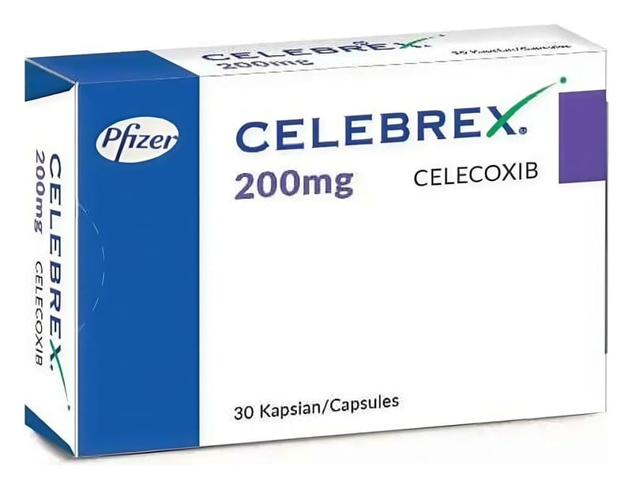

Celebrex 200 mg Kapsül, 30 Adet

Ne için kullanılır
KT · Bölüm 1• CELEBREX, selekoksib etkin maddesi içeren sert jelatin kapsül (beyazla kırık-beyaz arası bir renkte granülasyon içerir) formunda bir ilaçtır. Beyaz opak gövde üzerindeki altın sarısı rengi mürekkepli bantta beyaz “200”, beyaz opak kapak üzerindeki altın sarısı rengi mürekkepli bantta beyaz “7767” baskısı bulunmalıdır. Her iki altın sarısı bant da, kapsülün hemen hemen tamamını çevreler. 30 kapsüllük blister ambalajlarda satılmaktadır. • CELEBREX, steroid olmayan yangı giderici ilaçlar (NSAİİ) olarak adlandırılan bir ilaç grubunun, siklooksijenaz -2 (COX-2) inhibitörleri olarak bilinen alt grubuna ait bir ilaçtır. Vücudunuz, ağrı ve yangının ortaya çıkmasında rol oynayan prostaglandin adı verilen bir grup kimyasal madde üretmektedir. Eklemlerde ağrıya neden olan devamlı (kronik) bir hastalık olan
romatoid artrit ve eklemlerin aşınması sonucu ortaya çıkan osteoartrit gibi hastalıklarda, vücudunuz normalden daha fazla prostaglandin üretmektedir. CELEBREX, prostaglandinlerin üretimini azaltarak ve bu şekilde ağrı ve yangının da azalmasını sağlayarak etki gösterir. • CELEBREX, eklemlerde ağrı, şişlik ve şekil bozukluğuna neden olan devamlı (kronik) bir hastalık olan romatoid artrit, eklemlerin aşınması sonucu ortaya çıkan osteoartrit ve sıklıkla bel, sırt ve boyun bölgelerini etkileyen ve buralarda ağrı, hareket kısıtlılığı ve şekil bozukluğuna (kamburluk) neden olabilen bir hastalık olan ankilozan spondilitin belirti ve bulgularının hafifletilmesi için kullanılır. Ayrıca akut kas iskelet sistemi ağrıları, ameliyat sonrası ağrılar (post operatif ağrılar) ve adet sancısının giderilmesinde de etkilidir.